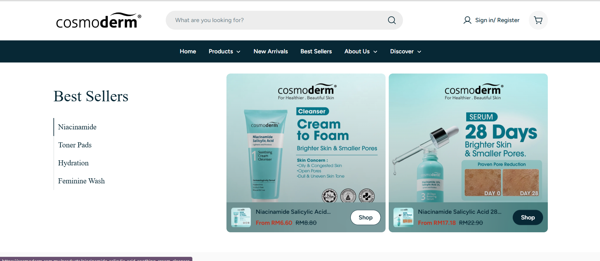
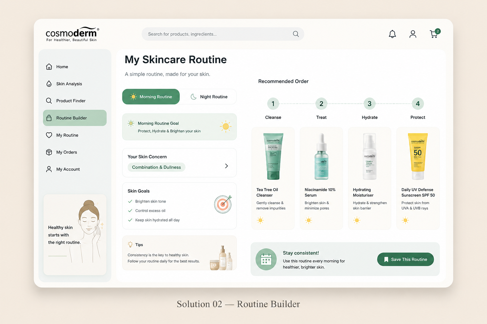
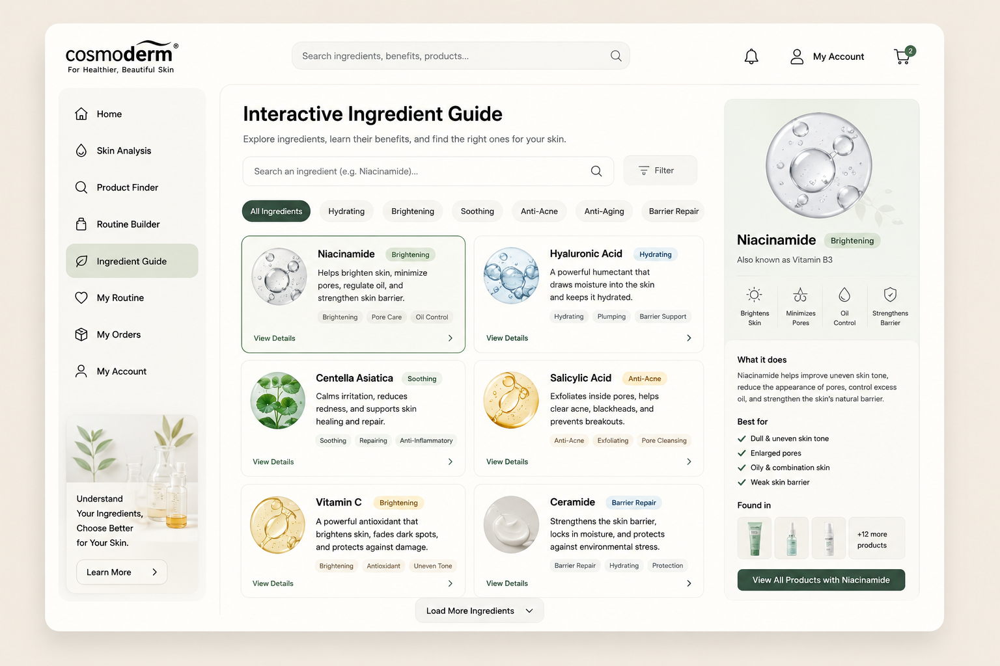
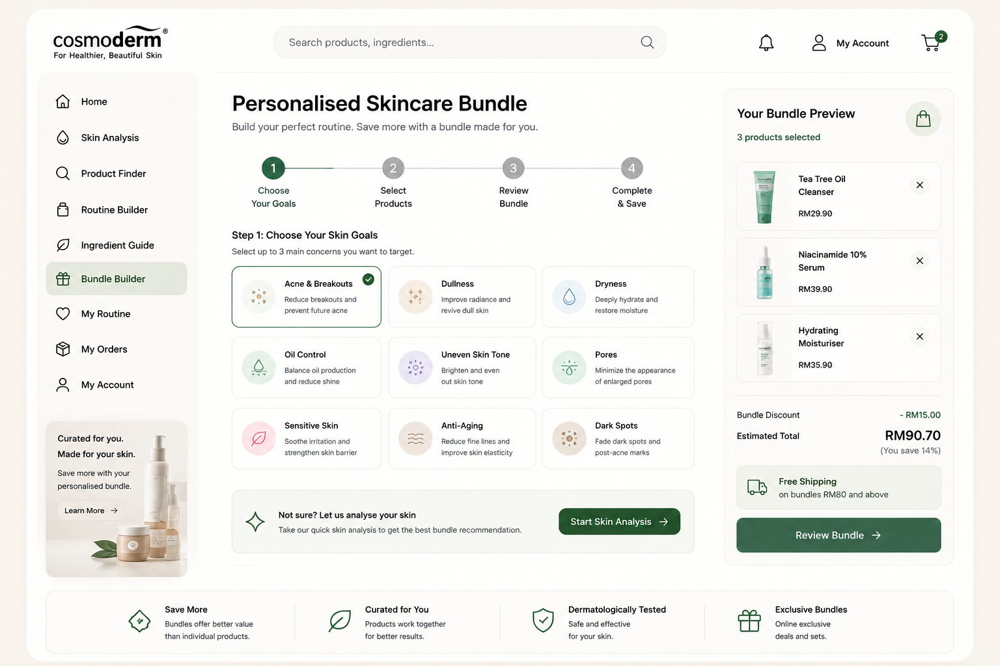
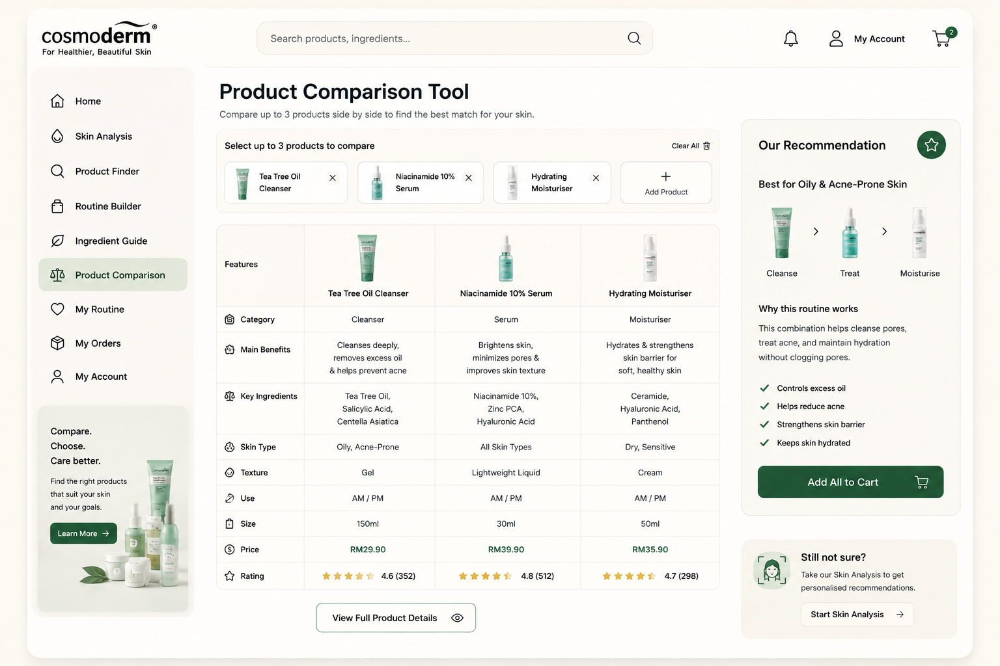

Solution 01 — Smart Product Finder
Smart
Product Finder
A simple product-finding feature that allows customers to select their main skincare concern, such as acne, dryness, dullness, excess oil, or uneven skin tone. The system then displays suitable Cosmoderm products.

Solution 02 — Routine Builder
Smart Skincare
Routine Builder
A digital tool that organises suitable Cosmoderm products into a simple morning and night skincare routine. It shows customers the recommended order of products such as cleanser, serum, moisturiser, and sunscreen.

Solution 03 — Ingredient Guide
Interactive
Ingredient Guide
An easy-to-understand ingredient guide that explains common skincare ingredients found in Cosmoderm products, including Niacinamide, Salicylic Acid, Hyaluronic Acid, Vitamin C, and Retinol.

Solution 04 — Personalised Bundles
Personalised
Skincare Bundles
Customers can choose a skincare goal such as hydration, brightening, or acne care. The website then recommends a bundle of Cosmoderm products that can be used together.

Solution 05 — Product Comparison
Product
Comparison Tool
A comparison feature that allows customers to place two or more Cosmoderm products side by side. Customers can compare their main ingredients, skin concerns, product benefits, texture, and recommended usage.